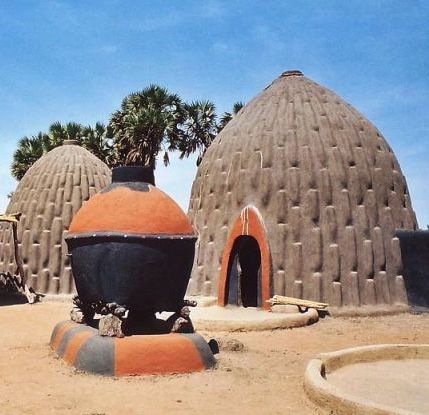

Douala – Cameroun
La conception architecturale à Maroua, capitale de la région de l’Extrême-Nord du Cameroun, est profondément influencée par le climat sahélo-soudanais, caractérisé par des températures élevées et des pluies limitées. Les architectes et constructeurs locaux adaptent les bâtiments pour optimiser la ventilation naturelle, la protection contre la chaleur et la durabilité des structures. Les habitations traditionnelles à Maroua utilisent des matériaux locaux, tels que la terre battue, les briques de banco et le bois pour les charpentes. Les toitures en chaume ou en palmes sont inclinées pour permettre une meilleure évacuation des eaux de pluie. L’organisation spatiale des maisons favorise la circulation de l’air et la lumière naturelle, tout en assurant un confort thermique adapté au climat. Avec l’évolution de la ville et l’influence des périodes coloniales, de nouvelles techniques et matériaux ont été introduits, notamment le béton armé, les blocs de ciment et les toitures métalliques. Les bâtiments modernes, qu’ils soient résidentiels, commerciaux ou administratifs, adoptent des structures robustes et modulaires pour résister aux conditions climatiques et aux besoins d’une population croissante. Aujourd’hui, la conception architecturale à Maroua combine tradition et modernité, conciliant esthétique, fonctionnalité et respect de l’environnement, tout en répondant aux exigences du développement urbain et des contraintes climatiques locales.
Les structures architecturales à Maroua, capitale de la région de l’Extrême-Nord du Cameroun, reflètent une adaptation au climat sahélo-soudanais, aux ressources locales et aux besoins sociaux. La ville est caractérisée par des bâtiments principalement de faible hauteur, adaptés à la chaleur intense et aux précipitations saisonnières limitées. Les constructions traditionnelles utilisent des matériaux locaux, tels que la terre battue, les briques de banco et le bois pour les charpentes, avec des toitures en chaume ou en palmes. Ces structures favorisent une ventilation naturelle et permettent de maintenir une température intérieure confortable. Avec la colonisation et l’introduction de nouvelles techniques, les bâtiments modernes adoptent des structures en béton armé, comprenant des poteaux, poutres et dalles. Les toitures sont souvent métalliques ou en tôle, avec une inclinaison adaptée pour évacuer les rares pluies. Les fondations sont renforcées pour assurer la stabilité sur des sols parfois argileux et irréguliers. Les bâtiments publics et commerciaux utilisent également des structures modulaires et métalliques pour combiner solidité, durabilité et esthétique. Aujourd’hui, les structures architecturales à Maroua montrent un mélange harmonieux de tradition et de modernité, répondant aux besoins résidentiels, institutionnels et commerciaux tout en respectant le contexte climatique et culturel de la ville.
L’histoire de l’architecture à Maroua, capitale de la région de l’Extrême-Nord du Cameroun, est étroitement liée à l’histoire culturelle, climatique et socio-économique de la région. À l’origine, l’architecture traditionnelle marouaise reflétait une adaptation au climat sahélo-soudanais, caractérisé par une chaleur intense et une pluviométrie limitée. Les habitations étaient principalement construites en terre battue, en briques de banco et en bois, avec des toitures en chaume ou en palmes, conçues pour limiter la chaleur et favoriser la ventilation naturelle. Au cours de la période coloniale allemande puis française, des techniques modernes et des matériaux comme le ciment, la brique cuite et le bois transformé furent introduits. Les bâtiments administratifs, les écoles et les marchés adoptèrent des formes plus standardisées tout en conservant des éléments adaptés au climat, tels que les cours intérieures et les avant-toits protecteurs. Après l’indépendance, Maroua a connu une urbanisation progressive. Les nouvelles constructions combinent structures en béton armé, charpentes métalliques et toitures inclinées pour répondre aux besoins modernes. Aujourd’hui, l’architecture de Maroua représente un mélange de tradition et de modernité, alliant respect des normes contemporaines, adaptation au climat et maintien de l’identité culturelle locale.